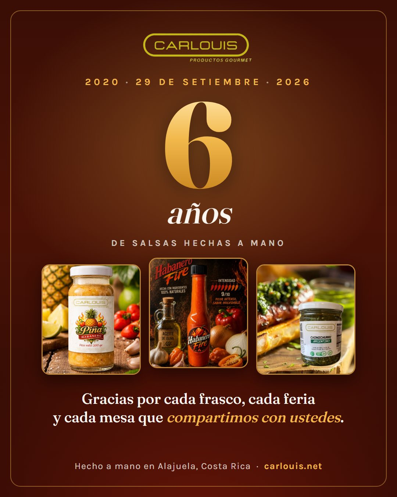
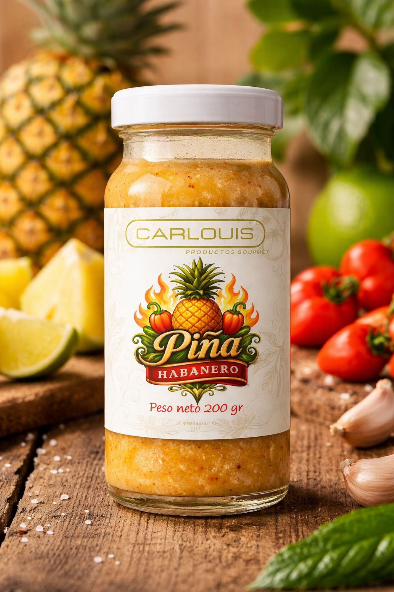
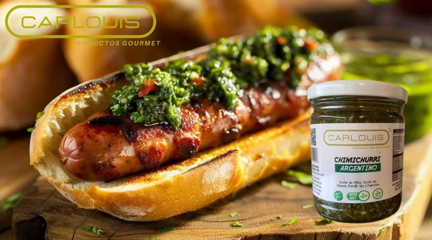
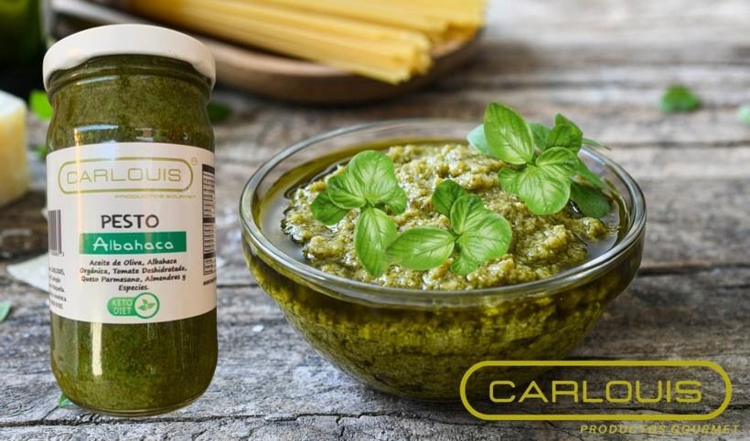
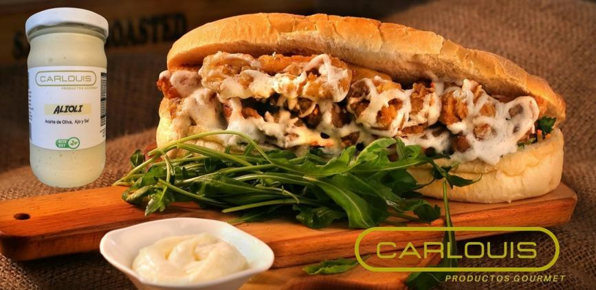
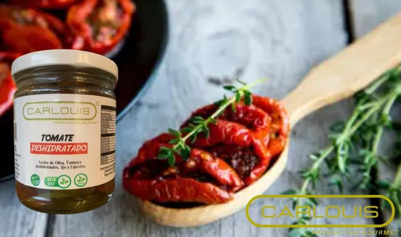
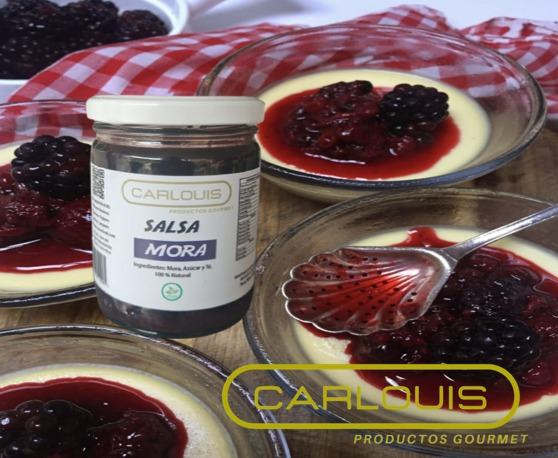

CARLOUIS cumple 6 años
Seis años haciendo salsas, pestos y conservas artesanales en Alajuela, frasco por frasco y feria por feria. Lo celebramos dando las gracias y sorteando una canasta con seis frascos de nuestros favoritos.
Una canasta con 6 frascos de lo que más nos piden
Seis años, seis frascos, de los cuatro por los que más nos conocen: pesto de tomate, alioli, salsa de chile dulce y tomates deshidratados.
- Seguí a @carlouis_cr en Instagram
-
Dale like a la publicación de los 6 años
Es la publicación del aniversario, la del 6 dorado.
-
Etiquetá a dos amigos en los comentarios
Cada comentario con dos amigos distintos cuenta como una participación.
Sorteo: lunes 12 de octubre de 2026. Anunciamos a quien gane en Instagram y le escribimos para coordinar la entrega. Participan personas en Costa Rica.
Seis años, frasco por frasco
CARLOUIS empezó el 29 de setiembre de 2020 en Alajuela, con una idea que no ha cambiado: que una salsa de verdad no necesita colorantes, espesantes ni nombres impronunciables en la etiqueta. Solo buen producto, tiempo y manos que saben lo que hacen.
Seguimos cocinando en lotes pequeños. Es más lento y no permite tener bodegas llenas, pero es lo que hace que el pesto huela a albahaca recién cortada, que el tomate deshidratado todavía sepa a tomate y que el habanero pique como debe picar.
Hoy son doce productos en cuatro categorías, una mesa todos los sábados en la feria La Verbena, ferias de temporada en el Valle Central y envíos a las siete provincias. Todo eso lo construyeron las personas que nos probaron una vez, volvieron y nos recomendaron.

Seis para empezar
Si nunca nos has probado, o si ya estás pensando qué escoger para tu canasta, estas son seis por donde arrancar.

Salsa Piña Habanero
La que más sorprende la primera vez: la piña entra dulce y el habanero llega después. Para cerdo, pollo y tacos.
Ver producto
Chimichurri Argentino
Perejil, ajo, orégano y aceite de oliva. Para la carne, sí, pero también para papas, patacones y pan.
Ver producto
Pesto de Albahaca
Albahaca y aceite de oliva, sin espesantes. Dos cucharadas a la pasta, siempre fuera del fuego.
Ver producto
Alioli
Cremoso y con el ajo presente. Se compra para las papas y se termina usando en todo.
Ver producto
Tomates Deshidratados
Tomate concentrado hasta quedar dulce, en aceite de oliva. Y el aceite del frasco también se usa.
Ver producto
Salsa de Mora
La única dulce de la línea, con la acidez de la mora. Con queso maduro, helado o cerdo.
Ver productoLa línea completa, seis años después
Doce productos en cuatro categorías. Tocá cualquiera para ver cómo se usa.
Pestos y salsas
Cremas y mayonesas
Dónde nos encontrás
Todos los sábados, de 6:00 a.m. a 1:00 p.m., en la Feria Orgánica La Verbena, Plaza Real Alajuela. Ahí se prueba todo antes de comprar.
Del 2 al 4 de octubre, de 7:00 a.m. a 5:00 p.m., en Terrazas Lindora, Santa Ana, con degustación. Es la semana del aniversario.
En ferias de temporada, como la de Forum 2 en Lindora o la Feria Holística de Ananta Yoga en Heredia. Las próximas las anunciamos en eventos.
Por WhatsApp, con envío a todo el país: San José, Alajuela, Heredia, Escazú y el resto de cantones.
Para negocios, al por mayor, para restaurantes, sodas, hoteles y tiendas gourmet.
Un favor de cumpleaños
Si en estos seis años alguna salsa nuestra te acompañó una parrillada, una pasta o una tabla con amigos, lo que más nos ayuda a seguir es que lo contés. Una reseña en Google hace que la próxima persona que busca salsas artesanales en Costa Rica nos encuentre.
Gracias por estos seis años.
Luis y Carlina, CARLOUIS
Preguntas frecuentes
¿Cómo participo en el sorteo de los 6 años?
Seguí a @carlouis_cr en Instagram, dale like a la publicación del aniversario y etiquetá a dos amigos en los comentarios. El sorteo es el lunes 12 de octubre de 2026.
¿Qué se gana en el sorteo?
Una canasta con seis frascos CARLOUIS de los cuatro productos por los que más nos conocen: pesto de tomate, alioli, salsa de chile dulce y tomates deshidratados.
¿Desde cuándo existe CARLOUIS?
Desde el 29 de setiembre de 2020. En 2026 cumplimos seis años haciendo salsas, pestos y conservas artesanales en Costa Rica.
¿Dónde se hacen los productos CARLOUIS?
En Alajuela, Costa Rica, en lotes pequeños y sin colorantes ni aditivos artificiales.
¿Dónde se compran los productos CARLOUIS?
Todos los sábados de 6:00 a.m. a 1:00 p.m. en la Feria Orgánica La Verbena, en Plaza Real Alajuela, y por WhatsApp al 8825 2608 con envío a todo el país.
¿CARLOUIS está en supermercados?
No. Vendemos directo: en feria, en ferias de temporada y por pedido con envío. Así el producto llega fresco y hablás directo con quien lo hace.
¿Cuántos productos tiene CARLOUIS?
Doce, en cuatro categorías: picantes, pestos y salsas, cremas y mayonesas, y conservas.
¿Venden al por mayor?
Sí, a restaurantes, sodas, hoteles y tiendas gourmet. Las condiciones están en la página de mayoreo.
¿Celebramos con un frasco?
Escribinos por WhatsApp, te ayudamos a escoger y te lo enviamos a tu cantón.